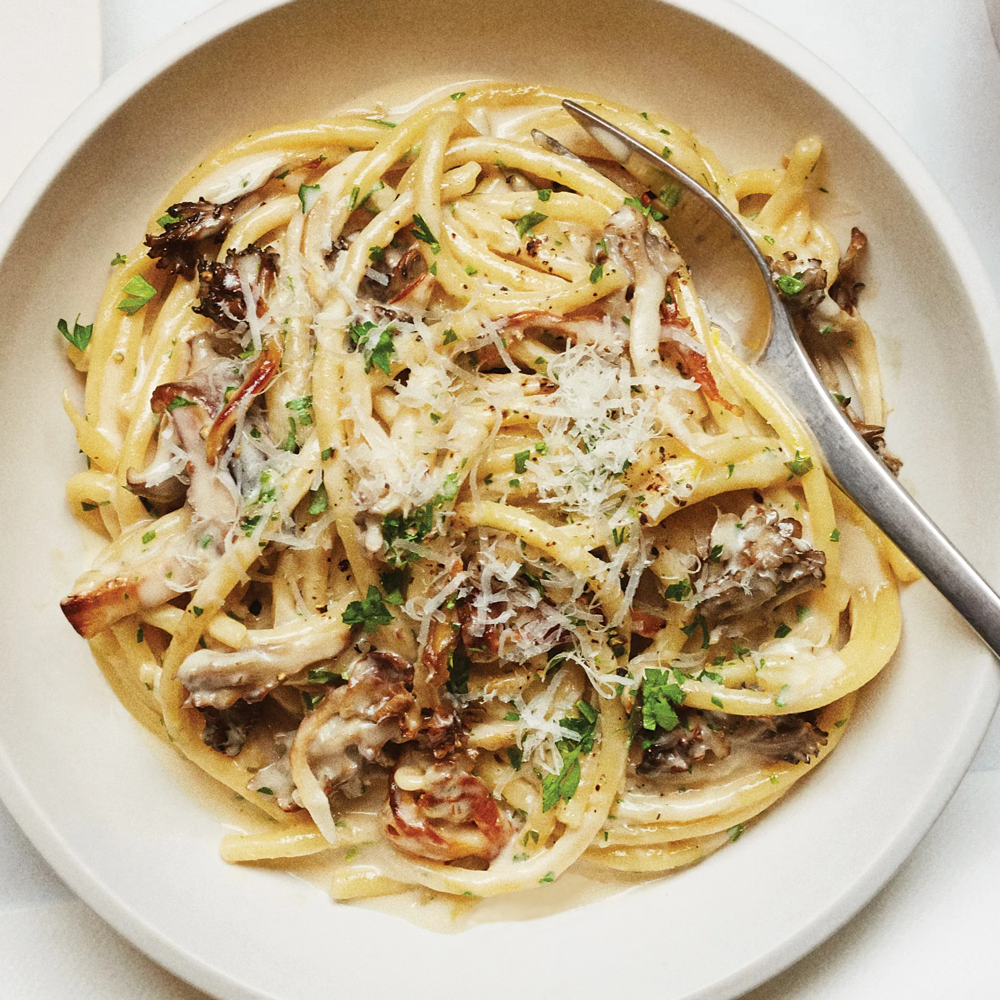

Creamy Pasta with Crispy Mushroom

A crispy, creamy, shroomy dish
INGREDIENTS
- 4 tbsp of extra-virgin olive oil
- 1 lb of mixed mushrooms (such as maitake, oyster, crimini, and/or shiitake), torn into bite-size pieces
- Kosher salt
- 2 medium shallots, finely chopped
- 1 lb of spaghetti or bucatini
- 1/2 cup of heavy cream
- Zest and juice of 1/2 lemon
- 1/3 cup of finely chopped parsley
- 2 tbsp of unsalted butter, cut into pieces
- 1/2 oz of parmesan, finely grated (about 1/2 cup), plus more for serving
- Freshly ground black pepper
PREPERATIONS
Step 1
- Heat 2 Tbsp. oil in a large pot over medium-high.
- Cook half of mushrooms in a single layer, undisturbed, until edges are brown and starting to crisp, about 3 minutes. Give mushrooms a toss and continue to cook, tossing occasionally, until all sides are brown and crisp, about 5 minutes more.
- Using a slotted spoon, transfer mushrooms to a plate; season with salt.
- Repeat with remaining 2 Tbsp. oil and mushrooms and more salt.
Step 2
- Reduce heat to medium-low and return all of the mushrooms to the pot.
- Add shallots and cook, stirring often, until shallots are translucent and softened, about 2 minutes.
Step 3
- Meanwhile, cook pasta in a large pot of boiling salted water, stirring occasionally, until very al dente, about 2 minutes less than package directions.
Step 4
- Using tongs, transfer pasta to pot with mushrooms and add cream and 1 cup pasta cooking liquid.
- Increase heat to medium, bring to a simmer, and cook, tossing constantly, until pasta is al dente and liquid is slightly thickened, about 3 minutes.
Step 5
- Remove pot from heat. Add lemon zest and juice, parsley, butter, 1/2 oz. Parmesan, and lots of pepper and toss to combine.
- Taste and season with more salt if needed.
Step 6
- Divide pasta among bowls and top with more Parmesan.